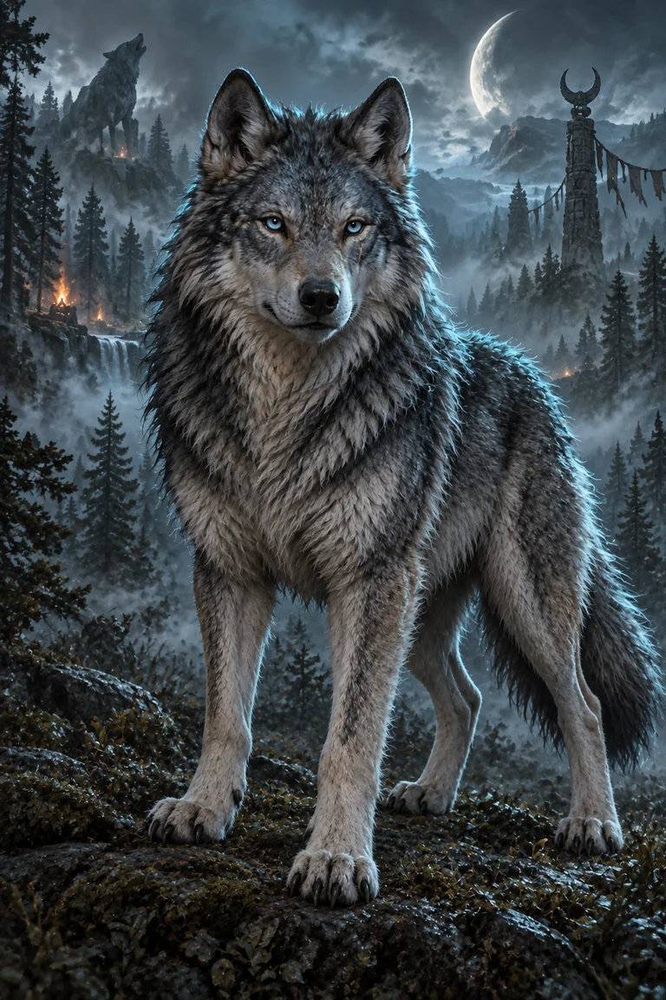

TÜRK MİTOLOJİSİNDEN BİR YOLCULUK
Ötüken
Mühürler
On iki mühür, otuz altı bulmaca. Mitolojik karakterlerin hikâyelerini keşfet, kartlarını aç ve muhafızlara karşı stratejini kur.
Töre varsa, umut vardır.
App Store’da ücretsiz keşfet ↗